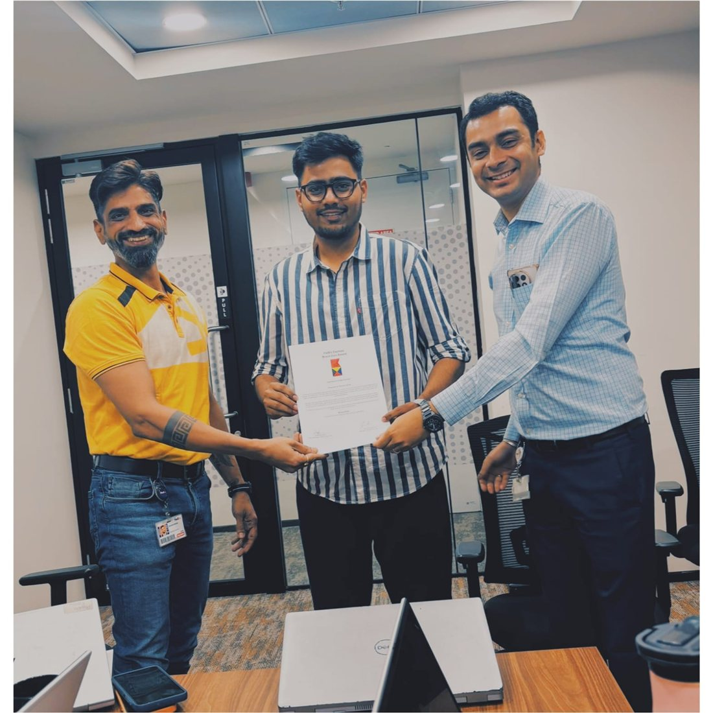
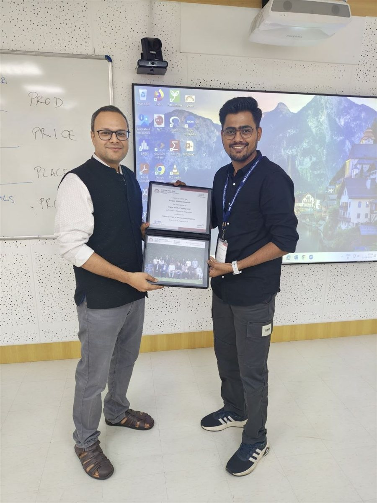

2016 — 2020 / The foundation
Engineering
B.E. Information Technology · University of Mumbai, DMCE
Learning to break complex systems into understandable parts. A foundation in technology, logic and structured problem solving.
Product · Strategy · Analytics
Based in India
Turning complex business problems into products, decisions and measurable outcomes.

A systems mind. A product lens.Engineering roots. Business perspective.
The through line
01 / ABOUTI started by understanding how technology works. Then I became interested in a bigger question: how can it work better for a business and the people within it?
Engineering gave me a systems mindset. An MBA in Business Analytics added a business lens. Today, I bring both to product problems—connecting stakeholder needs, data and execution to make better decisions possible.
Engineering
Technology
MBA
Strategy
Analytics & Product
A career in chapters
02 / JOURNEYEach step brought a new way to see the problem—and a better set of tools to solve it.
“Understand the system.
Question the problem.
Build the next step.”
2016 — 2020 / The foundation
B.E. Information Technology · University of Mumbai, DMCE
Learning to break complex systems into understandable parts. A foundation in technology, logic and structured problem solving.
Sep 2020 — Jan 2023 / At enterprise scale
Systems Engineer
Working with data pipelines, Google Cloud and enterprise systems. Learning how reliable technology, good governance and cross-team collaboration support a business.
2023 — 2025 / Broadening the lens
MBA · Business Analytics
Connecting analytical thinking with strategy, markets and management. Moving from how a system works to why a business decision matters.
Feb — Aug 2024 / From insight to direction
Strategic Planning Intern
Evaluating product performance, market opportunities and business cases. Translating research and competitive intelligence into clearer portfolio and innovation decisions.
Apr 2025 — Present / Bringing it together
Product Analyst · Sales Compensation
Connecting compensation policy, stakeholder needs and product delivery. Working across business and engineering teams on requirements, analytics, validation and release readiness.

The Bravo Zulu Award—a meaningful moment in a chapter built around collaboration, ownership and delivery.

Executive education in Digital Product Management at IIM Bangalore, building on an engineering foundation and an MBA in Business Analytics.
Selected problem spaces
03 / WORKA selection of problems I work on and explore, where business context, data and a product mindset meet.
How do you turn complex incentive policy into a dependable product? My work connects stakeholder requirements, business-rule validation and release readiness, helping business and engineering teams move from policy to implementation.
Requirements · Stakeholder alignment · UAT · Delivery
An area I’m interested in exploring: tools that let stakeholders compare compensation scenarios before implementation. The product challenge is to make assumptions explicit and trade-offs understandable, so a model supports judgment.
Compensation simulation · Decision design · What-if analysis
A product opportunity I’m exploring: making compensation policies easier to find and understand. Start with the user’s question, then consider how discovery, information structure and plain language can shorten the path to an answer.
Policy access · User needs · Information design
Analysis earns its place when someone can act on it. Across enterprise data and compensation work, I connect data quality, business context and stakeholder feedback to identify gaps and support more informed decisions.
SQL · Data pipelines · Business analysis · Reporting
At Pernod Ricard, I worked on post-launch evaluation, business cases and competitive intelligence. The common question: what evidence helps a team evaluate an opportunity and decide where to invest next?
Market analysis · Business cases · Product evaluation
These are high-level summaries. Internal data, proprietary policies and company-sensitive details are intentionally omitted.
The toolkit
04 / CAPABILITIESTechnical depth. Business context. A shared language across teams.
B.E. Information Technology + MBA Business AnalyticsStart a conversation
05 / CONTACTHave a product challenge, a strategic question, or a perspective to share? I’d love to hear from you.